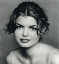

Lynn McKay, Assistant to Mr. Crosby


A cousin of former Sunrise hunk Alan Texas, Lynn
started in the business at the early age of fourteen
when she appeared in
several teenage horror pics. At
seventeen, she went on to land the title role of Annie
in the Bohica Studios erotic
thriller Psycho Sexual.
When Lynn hit twenty, she desired a career and
lifestyle change and enrolled in the Don Gordon
Memorial Rehabilitation Program. She graduated from
the center at the top of her class and was placed in Mr.
Crosby's
office. After six months as an intern, McKay
ascended into the role of Mr. Crosby's second
assistant. Finally this fall,
Lynn took on her current
full-time post. Keep it up Lynn, we're all so proud.